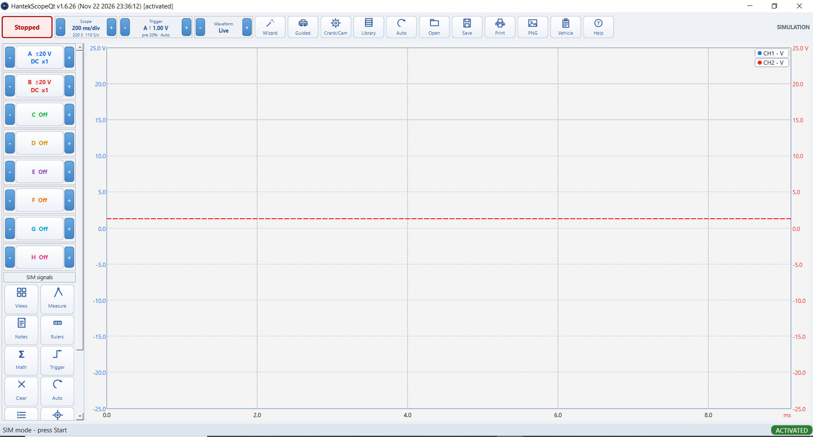
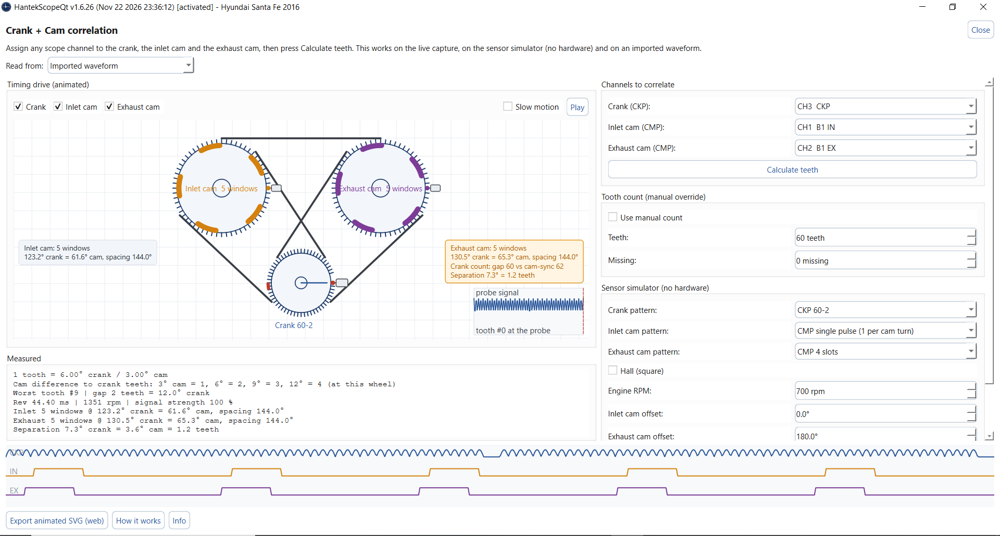

Universal Automotive Test & Measurement Platform
Download GitHubHantekScopeQt is a professional automotive test and measurement platform supporting multiple oscilloscope ecosystems including Hantek, PicoScope, AutoScope, Autel MaxiScope and HScope.
The software combines oscilloscope acquisition, waveform analysis, protocol decoding, digital multimeter functions, waveform conversion, guided diagnostics, crankshaft and camshaft correlation analysis, reluctor wheel analysis, sensor simulation and long-term recording within a single application available on Windows, Linux and Android.
GPU accelerated waveform rendering with configurable anti-aliasing, smooth joins and adjustable trace thickness.
More than 185 tested automotive guided diagnostics with integrated technician helpers.
Automatic tooth counting, missing tooth detection, cam phase measurements and animated engine timing analysis.
CAN, CAN FD, J1939, LIN, SENT, PSI5, I²C, I²S, 1-Wire and 10BASE-T1S support.
Import and export Hantek, PicoScope, AutoScope, Autel and HScope waveform formats.
Integrated voltmeter, ohmmeter and continuity tester.
Direct-to-disk CSV recording with virtually unlimited recording duration.
Windows, Linux and Android support.
Analyze crankshaft and camshaft synchronization from live captures, imported waveforms or the integrated sensor simulator.

Automatic crank tooth counting, cam window detection, camshaft phase calculation and animated timing drive visualization.

Mechanical timing analysis with reluctor wheel identification, missing tooth detection, synchronization verification and imported waveform analysis.
Integrated Digital Multimeter functions:
The Crank & Cam Analysis module converts electrical crankshaft and camshaft sensor signals into a mechanical timing model. Tooth count, missing teeth, cam windows, synchronization angles and phase relationships can be calculated automatically from imported waveform files or live captures.
Built-in validation warnings help identify incomplete captures, uncertain correlations, inconsistent tooth patterns and unreliable automatic detections.
Unlike traditional memory-based oscilloscopes, HantekScopeQt supports direct-to-disk waveform recording.